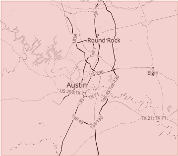
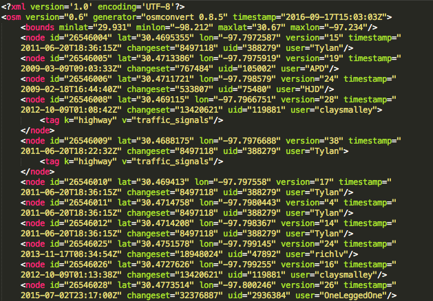
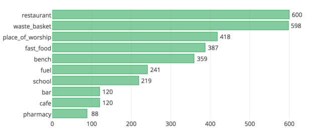
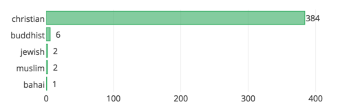
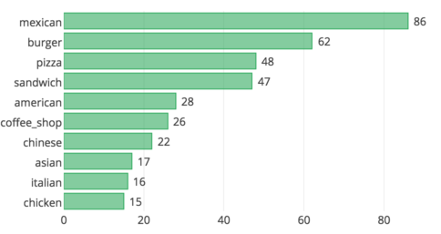

Openstreetmap (OSM) is free, editable map of the world crafted entirely by croudsourcing approach. To build an intution for this wiki-like map, I would like to take an example from the recent earthquake in Nepal. In only 48 hours after the quake, over 2000 volunteers mapper responded to the crisis by quadrupling the road mileage and adding 30% more buildings. OSM is the biggest crowdsourced project ever. However, since the OSM data is human edited, it comes with it's own challenges for cleaning.
For this case study, I will be exploring the OSM map of Austin, TX. I live in the outskirts of Austin. I love the plethora of outdoor activities the city of Austin has to offer. I would like to take this opportunity to contribute to OpenStreetMap.org by wrangling the data and parsing it for for SQLite database entry. In the process, I intend to discover new things about Austin.


I used iterative parsing to process the dataset and find out what tags and how many of them are there. It gives us an idea of how much data we can expect in the map.
{'bounds': 1,
'member': 20203,
'nd': 6984479,
'node': 6355440,
'osm': 1,
'relation': 2358,
'tag': 2377201,
'way': 666267}In particular we will be processing nodes and ways tags and all the subtags that are nested within these tags for database entry. Nodes are point features defined by its latitude, longitude and node id. Ways are paths through a city of one kind or another like Street, Avenue, Drive, Boulevard etc.
Before I process the data and add it to database, I checked the "k" value for each "
{'lower': 1297519, 'lower_colon': 1067731, 'other': 11950, 'problemchars': 1}- "lower", for tags that contain only lowercase letters and are valid,
- "lower_colon", for otherwise valid tags with a colon in their names,
- "problemchars", for tags with problematic characters, and
- "other", for other tags that do not fall into the other three categories
The problemchars were later ignored during database entry.
Problems Encountered in the Map¶
After auditing the osm file for validity, accuracy, completeness, consistency and uniformity, I noticed five main problems with the data, which I will discuss in the following order:
- Overabbreviated Street Names ("W 6th St")
- Inconsistent postal codes ("TX 78724", "78640-6137", "78681")
- “Incorrect” postal codes ("78626\u200e","Texas", "tx", "14150")
- Inconsistent state name ("tx", "tX", "Tx", "TX", "Texas")
- Inconsistent phone number format
- Username error ('ccjjmartin_atxbuildings', 'ccjjmartin__atxbuildings')
- Address in second level “k” tags pulled from Tiger GPS data and arranged in the following format:
tag k="tiger:cfcc" v="A41" tag k="tiger:county" v="Bastrop, TX" tag k="tiger:reviewed" v="no" tag k="tiger:zip_left" v="78602" tag k="tiger:name_base" v="Tiger Woods" tag k="tiger:name_type" v="Dr" tag k="tiger:zip_right" v="78602" - Address in second level “k” tags pulled from gnis and arranged in the following format:
tag k="gnis:id" v="1378406" tag k="gnis:Class" v="Populated Place" tag k="gnis:County" v="Travis" tag k="gnis:ST_num" v="48" tag k="import_uuid" v="bb7269ee-502a-5391-8056-e3ce0e66489c" tag k="gnis:ST_alpha" v="TX" tag k="gnis:County_num" v="453"
Overabbreviated Street Names¶
To correct street names, I iterated over each word in an address, correcting them to their respective mappings in update_street.py using the following function:
def update(name):
words = name.split()
for w in range(len(words)):
if words[w] in mapping:
if words[w-1].lower() not in \
['suite', 'ste.', 'ste', 'avenue', 'ave']:
# For example, don't update 'Avenue E' to 'Avenue East'
words[w] = mapping[words[w]]
name = " ".join(words)
return nameThe function takes a string with street name as an argument and returns the fixed name. The function updated all substrings in problematic address strings, for example:
- “Hwy 290 W” becomes: “Highway 290 West”
- "W 6th St" becomes: “West 6th Street”
- "Barton Springs Rd" becomes: “Barton Springs Road”
Postal codes¶
Postal codes didn't follow consistent format. Besides the main 5digit zipcode, there were leading characters ('TX 78724'), trailing characters ('78640-6137', '78626\u200e'), invalid zipcodes ('Texas', 'tx') and zipcode outside Austin ('14150').
Postal codes were formatted to trim the leading and trailing characters besides 5digit zipcode using update_postcode.py. This 5digit restriction allows for more consistent queries.
import re
def update_postcode(zipcode):
m = re.search(r'\d+', zipcode) #returns entire match
if m:
return m.group()
else:
return NonePostal codes in the database were grouped together using the following aggregators.
sqlite> SELECT tags.value, COUNT (*) as count
...> FROM (SELECT * FROM nodes_tags
...> UNION ALL SELECT * FROM ways_tags) tags
...> WHERE tags.key = 'postcode'
...> GROUP BY tags.value
...> ORDER BY count DESC;Here are the top ten results, beginning with the highest count:
78645,10882
78734,5606
78653,3542
78660,3512
78669,3189
78641,2863
78704,2488
78746,2445
78759,2092
78738,1938Surprisingly, the zipcode with highest frequency is in Leander, TX. The inclusion of surrounding cities, however, isn't unexpected because of the inclusion of surrounding cities in osm data. Somehow, a errorneous zipcode '14150' also got into the dataset. Google search revealed that zipcode '14150' is in Tonawanda, NY. Lets dig deeper into it.
sqlite> SELECT *
...> FROM nodes
...> WHERE id = (SELECT id FROM nodes_tags WHERE key = 'postcode' \
AND value = '14150');2152207067,30.5604873,-97.4545532,technogeek,98830,1,15008653,2013-02-12T18:28:31ZThe coordinates(latitude, longitude) for the place are actually in Taylor, TX.
sqlite> SELECT * FROM nodes_tags WHERE id = 2152207067;2152207067,name,"Nyle Maxwell - Taylor",regular
2152207067,shop,car,regular
2152207067,website,www.nylemaxwellcjd.com,regular
2152207067,street,"US 79",addr
2152207067,postcode,14150,addrIt turns out the actual address is 14150 U.S. 79, Taylor, TX 76574, United States. The user misinterpreted the address for postcode. The error can easily be rectified in the database with following SQL commands.
sqlite> UPDATE nodes_tags SET value = '14150 US 79' WHERE id= 2152207067 \
AND key = 'street';
sqlite> UPDATE nodes_tags SET value = '76574' WHERE id= 2152207067 \
AND key = 'postcode';We can check id = 2152207067 into nodes_tags database again to see if the error has been rectified.
2152207067|name|Nyle Maxwell - Taylor|regular
2152207067|shop|car|regular
2152207067|website|www.nylemaxwellcjd.com|regular
2152207067|street|14150 US 79|addr
2152207067|postcode|76574|addrState name¶
Running audit_state.py with the entire austin_texas.osm dataset revealed the following inconsistencies in the state name.
{'78722': 1, 'tx': 694, 'tX': 1, 'Tx': 43, 'TX': 2273, 'Texas': 59}State name was standarized by setting the value to "TX" whenever key equals to "state".
Phone numbers¶
Phone number formats were inconsistent - "512-241-1732", "(512) 244-2222", "512 258 8114", "(512) 528-0027", "+1 512 219 5008", "+1 (512) 469-7000". Phonenumbers were standardized using update_phonenumber.py module.
import phonenumbers
def update_phonenumber(phonenumber):
'''fix and standardize phone numbers using phonenumbers module'''
matches = \
[match.number for match in phonenumbers.PhoneNumberMatcher(phonenumber, "US")]
updated_matches = \
[phonenumbers.format_number(match,phonenumbers.PhoneNumberFormat.NATIONAL)
for match in matches]
phonenumber = ';'.join(updated_matches)
return phonenumberPhonenumbers were converted, where necessary, to national format: (512) XXX-XXXX.
user¶
Once the data was imported to SQL, some basic querying also revealed username inconsistency. The user "Chris Martin's" had two username - 'ccjjmartin_atxbuildings' and 'ccjjmartin_atxbuildings'. I updated the second username to first one in both the nodes and ways table.
sqlite> UPDATE nodes SET user = 'ccjjmartin_atxbuildings'
...> WHERE user = 'ccjjmartin__atxbuildings';
sqlite> UPDATE ways SET user = 'ccjjmartin_atxbuildings'
...> WHERE user = 'ccjjmartin__atxbuildings';Data Overview¶
After auditing the data, it was prepped for insertion into SQLite database. To do so, I parsed the data in OSM XML format to tabular format(.csv files) using data_sql.py function. These csv files were then imported to SQLite database osm.db3 as tables following schema.md.
This section contains basic statistics about the dataset, the SQL queries used to gather them, and some additional ideas about the data in context.
File sizes¶
austin_texas.osm 1.3 GB
sample.osm 27 MB
osm.db3 3758 MB
nodes.csv 570 MB
nodes_tags.csv 11 MB
ways.csv 46 MB
ways_nodes.csv 161 MB
ways_tags.csv 65 MBNumber of unique users¶
sqlite> SELECT COUNT(DISTINCT(e.uid))
FROM (SELECT uid FROM nodes UNION ALL SELECT uid FROM ways) e;1133
Total number of users¶
sqlite> SELECT COUNT(*) as num
...> FROM (SELECT user FROM nodes UNION ALL SELECT user FROM ways)7021707
Top 10 contributing users¶
sqlite> SELECT e.user, COUNT(*) as num
...> FROM (SELECT user FROM nodes UNION ALL SELECT user FROM ways) e
...> GROUP BY e.user
...> ORDER BY num DESC
...> LIMIT 10;patisilva_atxbuildings,2743718
ccjjmartin_atxbuildings,2240585
wilsaj_atxbuildings,359155
jseppi_atxbuildings,300983
woodpeck_fixbot,223478
kkt_atxbuildings,157853
lyzidiamond_atxbuildings,156384
richlv,50216
johnclary_axtbuildings,48232
varmint,35374The word "bot" appears in some usernames. These accounts are used for automated edits in contrast to manual edits for other accounts.
Number of users appearing only once (having 1 post)¶
sqlite> SELECT COUNT(*)
...> FROM
...> (SELECT e.user, COUNT(*) as num
...> FROM (SELECT user FROM nodes UNION ALL SELECT user FROM ways) e
...> GROUP BY e.user
...> HAVING num=1) u;250
Additional Data Exploration¶
Contributor statistics¶
Here are some user percentage statistics:
- Top user contribution percentage (“patisilva_atxbuildings”) 39.07%
- Combined top 2 users' contribution (“patisilva_atxbuildings” and “ccjjmartin_atxbuildings”) 70.98%
- Combined top 10 users contribution 89.95%
Top 10 appearing amenities¶
sqlite> SELECT value, COUNT (*) as num \
...> FROM nodes_tags \
...> WHERE key = 'amenity' \
...> GROUP BY value \
...> ORDER BY num DESC \
...> LIMIT 10"
Biggest religion¶
sqlite> SELECT value, COUNT (*) as num \
...> FROM nodes_tags \
...> WHERE key = 'religion' \
...> GROUP BY value \
...> ORDER BY num DESC \
...> LIMIT 10"
Most popular cuisines (no surprise here)¶
sqlite> SELECT value, COUNT (*) as num \
...> FROM nodes_tags \
...> WHERE key = 'cuisine' \
...> GROUP BY value \
...> ORDER BY num DESC \
...> LIMIT 10"
Conclusion and Recommendations¶
The review of this data followed an interative cycle of auditing, creating a cleaning plan, programatically executing the plan and manually correcting. I believe the data has been well cleaned for the purpose of this exercise. However, there is a lot of work that needs to be done to complete the map. There is clearly a lot of missing data. Below, I recommend additional ideas for improving and analyzing the data.
It is amazing that several users have entered a fair amount of TIGER (Topologically Integrated Geographic Encoding and Referencing) GPS data and GNIS (Geographic Names Information System) data into Openstreetmap.org. However, we currently lack a data processor to process TIGER GPS data and GNIS data.
Benefits
- With a data processing system for TIGER and GNIS data, a huge amount of cleaned data can be entered into Openstreetmap.org.
Challenges
- How do we build a robust data processing system ? With user entered data, there is bound to be variations and typgraphical errors. It will also be nice to have a well agreed form of data for input, as there are variations even within TIGER GPS data and GNIS data entered.
Also, OSM I believe, is about the community of volunteers from all around the globe. These mappers are updating the map as their world changes around them. The user statistics are however, skewed. In our case, we saw that top 10 users created around ~90% of the map. If the user data were displayed more prominently, it would likely motivate other users to submit more edits for the map. Gamified approach to fixing OSM bugs as adopted by MapRoulette and crowdsourced streetview approach by Mapillary are commendable.
Benefits
Mapping, fixing bugs, analyzing data will be quite fast with an army of mappers working on it.
This crowdsourcing approach would considerably reduce the cost. Imagine having to pay minimum US wage for the task.
Challenges
A common operational procedure has to be defined for managing the gamification approach, e.g incentives for users, tracking user activity, quality assurance etc.
How do we get users from around the world to contribute on diverse geographical regions? How do we provide support on regional challenges?
Comments
comments powered by Disqus